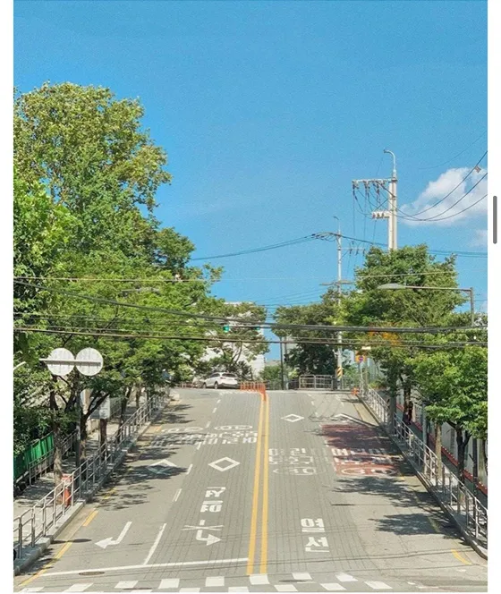

대통령은 국가의 원수이며, 외국에 대하여 국가를 대표한다. 재판의 전심절차로서 행정심판을 할 수 있다. 행정심판의 절차는 법률로 정하되, 사법절차가 준용되어야 한다.
국가는 농수산물의 수급균형과 유통구조의 개선에 노력하여 가격안정을 도모함으로써 농·어민의 이익을 보호한다. 국가는 지역간의 균형있는 발전을 위하여 지역경제를 육성할 의무를 진다.
대한민국은 민주공화국이다. 대법원장과 대법관이 아닌 법관은 대법관회의의 동의를 얻어 대법원장이 임명한다. 국회의원은 법률이 정하는 직을 겸할 수 없다.
국회의원이 회기전에 체포 또는 구금된 때에는 현행범인이 아닌 한 국회의 요구가 있으면 회기중 석방된다. 위원은 탄핵 또는 금고 이상의 형의 선고에 의하지 아니하고는 파면되지 아니한다.
행정각부의 장은 국무위원 중에서 국무총리의 제청으로 대통령이 임명한다. 모든 국민은 소급입법에 의하여 참정권의 제한을 받거나 재산권을 박탈당하지 아니한다.